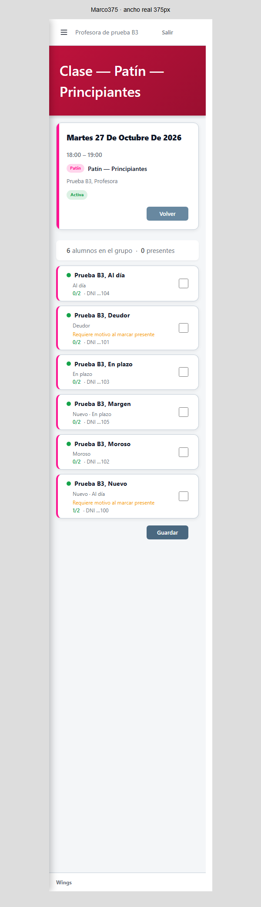
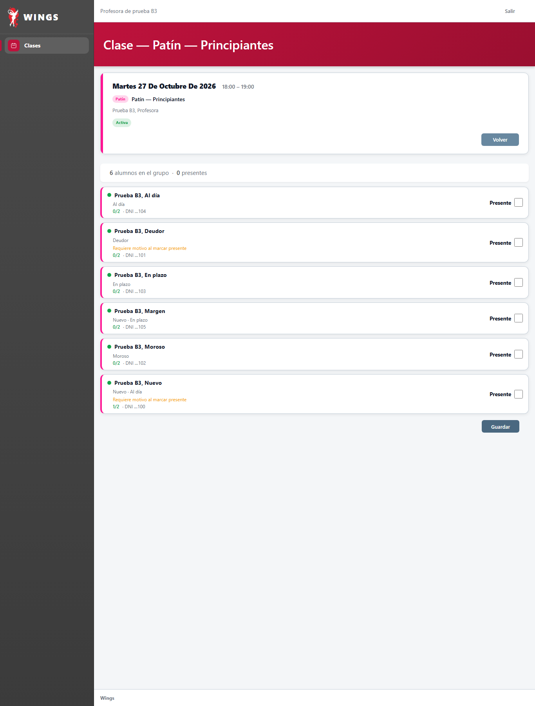
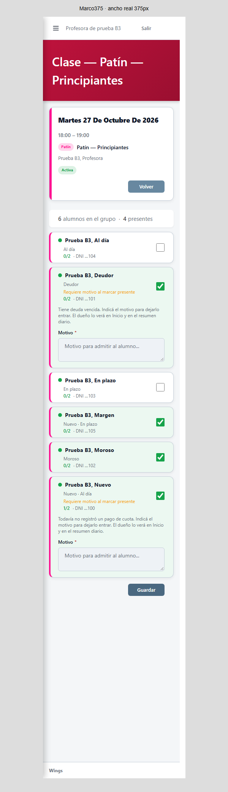
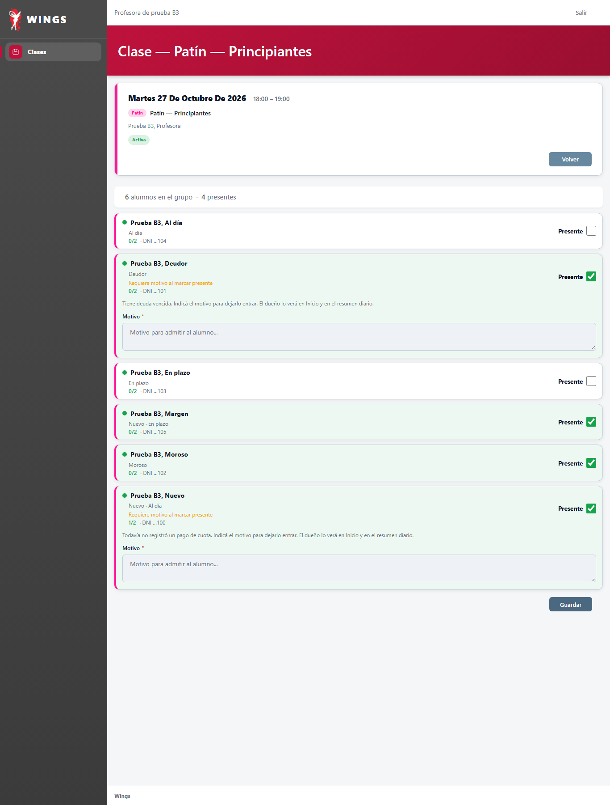
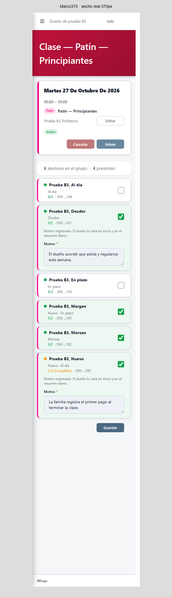
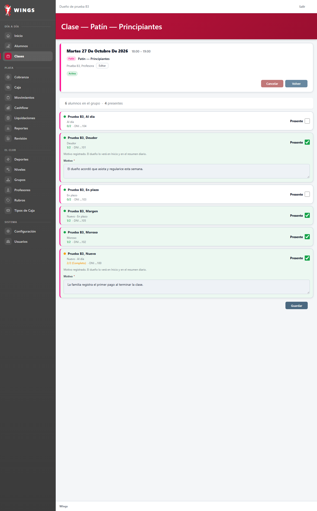
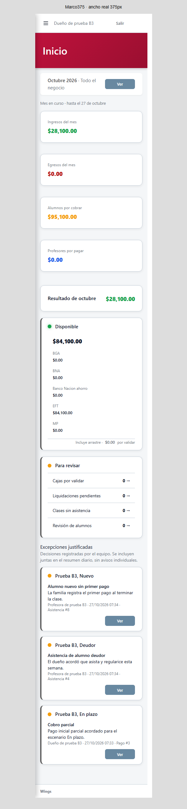
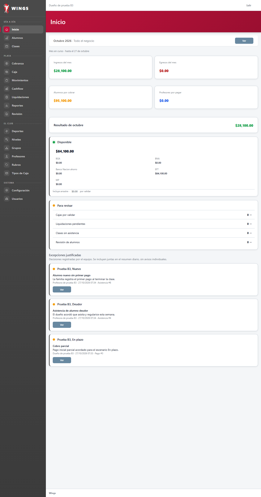

B3 · Asistencia
Wings funcionando en localhost, solo datos sintéticos de wings_testing_codex. La condición acompaña a cada alumno; los motivos aparecen dentro de su tarjeta. El contador interno del alumno nuevo no se muestra. Los números semanales del plan ya existían.
Lista y condiciones · Profesora
Al día, En plazo, Moroso, Deudor y Nuevo. Solo se anuncia motivo cuando corresponde.
Celular · marco375

Escritorio ·1366

Motivos dentro de la lista · Profesora
Nuevo sin primer pago y Deudor requieren motivo. Moroso y el nuevo dentro del margen se marcan sin justificar.
Celular · marco375

Escritorio ·1366

Marcas persistidas · Consulta del dueño
El aviso abre la clase de origen, con los motivos guardados. Reenviar la lista no duplica decisiones.
Celular · marco375

Escritorio ·1366

Inicio del dueño · Registro común
Dos excepciones de asistencia y el parcial creado al preparar el escenario En plazo. Autor, motivo, fecha y origen visibles.
Celular · marco375

Escritorio ·1366

Login de calibración · Informe de asistencia · Entrega anterior: dinero
DOM observados en el navegador, con sus valores reales, tokens neutralizados y assets locales. Marco375 medido en la propia captura; sin inventar HTML de Wings ni editar imágenes. Aspecto pendiente de aprobación de Carlos.